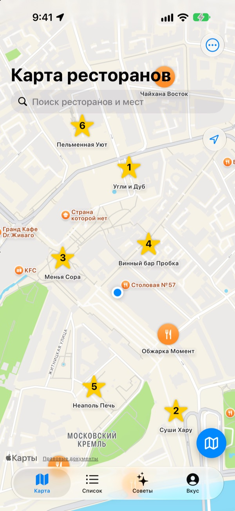
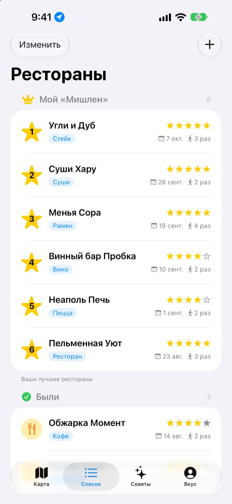
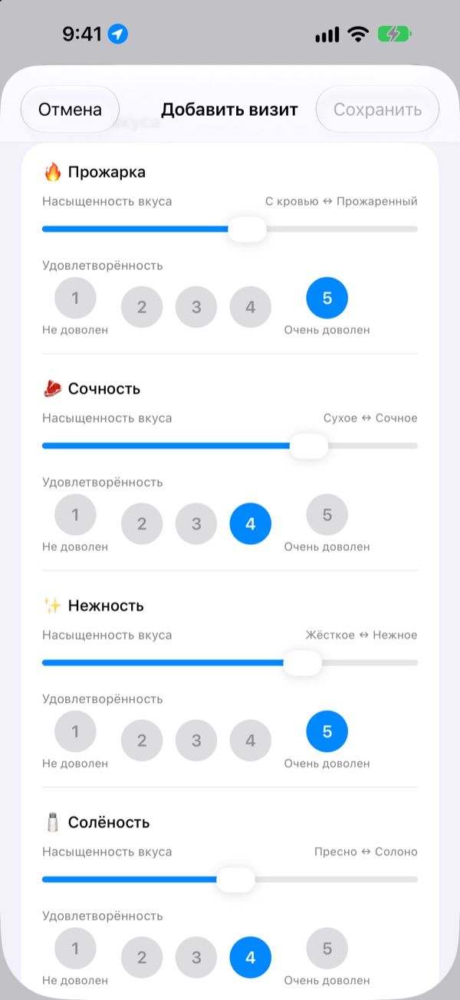
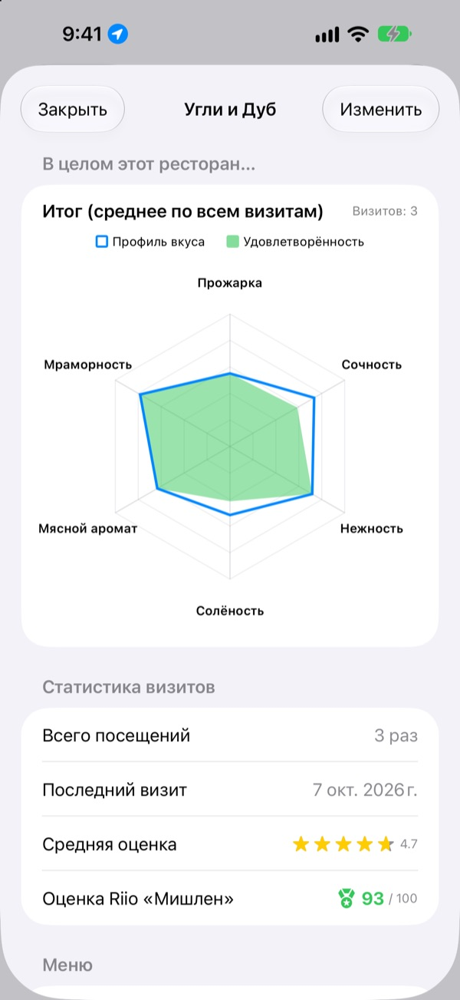

Больше не забывайте,
где было вкусно
Отмечайте на карте рестораны, где уже были и куда хотите сходить, и после каждого визита записывайте, что заказали, фото и оценку вкуса. Когда не знаете, куда пойти, ответ уже в ваших записях.
Все функции бесплатны. Без регистрации, записи хранятся только на вашем iPhone.

Оцените блюдо
Выберите вид блюда и отметьте насыщенность каждого вкуса и то, насколько он вам понравился. Те же пункты и тот же расчёт, что в приложении.
Там было вкусно, но что я заказывал?
Вы точно помните, что ресторан понравился, но название уже стёрлось, а что вы заказывали и не был ли суп пересолен, не вспомнить совсем. И вы снова ищете и читаете чужие отзывы. Insaeng хранит на карте то, что вы попробовали сами, чтобы следующий выбор опирался на ваш опыт.
Были, хочу пойти и ваш «Мишлен»
Найдите место на карте или коснитесь ближайшего заведения, и оно сразу сохранится. Держите отдельно места, где уже были, и те, куда хотите сходить, а шесть любимых расставьте по местам с 1 по 6.
Когда спросят, куда сходить, просто покажите этот список.

Вопросы под конкретное блюдо
Насыщенность вкуса, например остроту или солёность, задаёте ползунком, а то, насколько понравилось, отдельно оцениваете от 1 до 5. Для стейка это прожарка и сочность, для суши рис и рыба, для рамена бульон и лапша.
В записи о визите также остаются блюдо, фото, звёзды и заметки.

Куда стоит вернуться, видно по цифрам
Когда визитов становится больше, на странице ресторана появляется итоговая диаграмма по всем посещениям и оценка Riio «Мишлен» из 100, которая учитывает звёзды и удовлетворённость.
Когда вы уходите из сохранённого ресторана, чуть позже приходит напоминание записать визит.

Три шага, чтобы начать
- 1
Сохраните ресторан
Найдите его на карте или коснитесь ближайшего места.
- 2
Запишите визит
Блюдо, фото, звёзды и оценка вкуса. Оценка вкуса по желанию.
- 3
Выберите, куда дальше
Посмотрите топ‑6 и оценки и проложите маршрут в Apple Картах, Kakao Map или Naver Map.
Что оценивается для разных блюд
- 🍽️ Общее
- Острота, Насыщенность, Сладость, Солёность, Жирность, Естественный вкус
- 🥩 Стейк
- Прожарка, Сочность, Нежность, Солёность, Мясной аромат, Мраморность
- 🍣 Суши
- Шари (рис), Нета (начинка), Васаби, Баланс, Формовка, Температура
- 🍜 Рамен
- Бульон, Лапша, Чашу, Топпинги, Температура, Баланс
- 🍕 Пицца
- Тесто, Соус, Сыр, Прожарка, Топпинги, Баланс
- 🍷 Вино
- Тело, Танины, Кислотность, Аромат, Послевкусие, Баланс
- ☕ Кофе
- Кислинка, Тело, Аромат, Послевкусие, Сладость, Баланс
Остальные блюда оцениваются по общему набору из первой строки. Можно создавать и свои категории.
Частые вопросы
Как добавить ресторан?
Введите название ресторана в строку поиска вверху карты и в результатах коснитесь «Добавить в мои рестораны». Можно также коснуться ближайшего заведения на карте и сразу его добавить. Если места нет в поиске, добавьте его вручную: по текущему местоположению или в выбранной точке карты.
Что такое «Были», «Хочу пойти» и топ-6?
Были: рестораны, где вы уже побывали. Для них можно вести дневник визитов. Хочу пойти: рестораны, куда хочется когда-нибудь сходить. Побывав там, переключите ресторан в «Были» на его странице. Топ-6 (Мой «Мишлен»): шесть самых любимых ресторанов с местами от 1-го до 6-го. Ресторан из списка «Хочу пойти» нельзя добавить в топ-6.
Обязательно ли оценивать вкус?
Нет, это по желанию. Оценка добавляет насыщенность вкуса и удовлетворённость в итоговую диаграмму ресторана и учитывается в оценке Riio «Мишлен».
Когда приходит уведомление «Как вам сегодняшний визит?»
Если вы пробыли рядом с сохранённым рестораном больше 5 минут, а затем ушли, уведомление придёт примерно через 40 минут. Для этого нужен доступ к геопозиции в режиме «Всегда» и разрешение на уведомления. Если уведомления не нужны, откройте «Настройки» > «Приложения» > Insaeng и отключите уведомления или переключите геопозицию на «При использовании приложения». Местоположение проверяется только на устройстве. Ваши перемещения не сохраняются и никуда не передаются.
Можно ли пользоваться приложением без доступа к геопозиции?
Да. Вы можете сами выбирать точку на карте, чтобы добавлять рестораны и вести записи. Недоступны будут только отображение текущего местоположения и напоминания после визита.
Поиск мест ничего не находит
Для поиска мест нужно подключение к интернету. Попробуйте другое название или более короткий запрос. Если места всё равно нет, выберите точку на карте и добавьте его вручную.
Где хранятся записи? Синхронизируются ли они с другими устройствами?
Рестораны, дневник визитов и фото хранятся только на этом iPhone. Текущая версия не поддерживает синхронизацию с другими устройствами, а резервное копирование и восстановление через iCloud в настройках пока не работает. При этом полная резервная копия iPhone (в iCloud или на компьютере) включает данные приложения.
Хочу удалить все записи
Откройте настройки на экране карты и коснитесь «Удалить все данные»: рестораны и дневник визитов будут удалены. Это действие нельзя отменить, поэтому будьте внимательны. Чтобы бесследно удалить и фото, удалите приложение.
Сохранятся ли записи, если удалить и заново установить приложение?
Нет. Записи хранятся только на устройстве, поэтому удаляются вместе с приложением. Обязательно учтите это перед удалением.
Это правда всё бесплатно?
Да, все функции бесплатны, без рекламы и регистрации. «Поддержать разработчика» в настройках — только по желанию и ничего дополнительно не открывает.
Если здесь нет ответа на ваш вопрос, отправьте его прямо из приложения через «Настройки» > «Поддержка» или напишите на mizzking75@gmail.com. Укажите версию приложения, модель iPhone, а также на каком экране и что вы делали — так мы разберёмся быстрее.